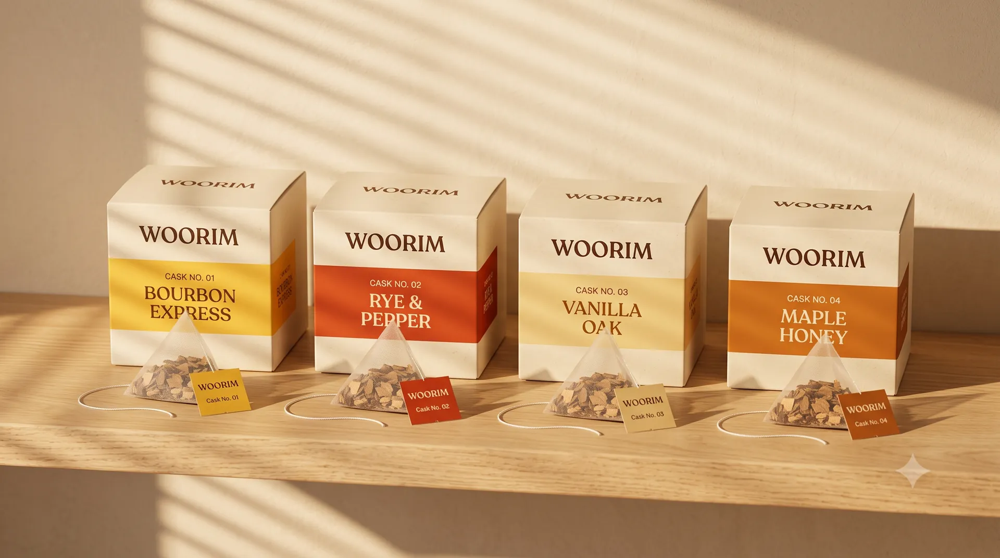
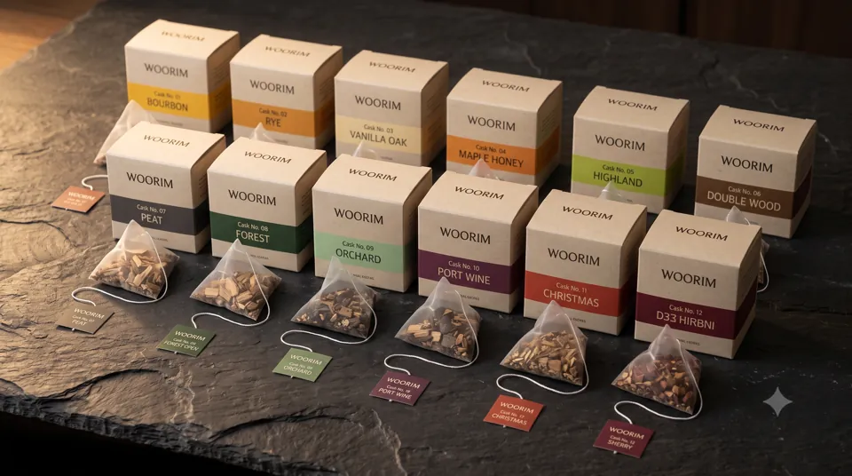

블렌딩BLENDING
12종의 풍미별 티백 중 1~3장을 골라 섞으면 나만의 블렌디드 완성. 한 장은 '싱글 캐스크', 세 장을 섞으면 '트리플 캐스크 피니시'.
WOORIM · 우림
'우리다'와 숲 림(林)을 합친 이름처럼, 익숙한 소주·보드카·탄산수에 오크 티백을 우려 나만의 위스키 풍미를 만드세요.
Brand Film
Features
WOORIM의 두 가지 기능, 블렌딩과 숙성. 위스키 한 병 대신 티백 몇 장으로 매일 다른 한 잔을 즐기세요.
12종의 풍미별 티백 중 1~3장을 골라 섞으면 나만의 블렌디드 완성. 한 장은 '싱글 캐스크', 세 장을 섞으면 '트리플 캐스크 피니시'.
티백을 우리는 시간이 곧 숙성. 원하는 깊이가 되었을 때 티백을 건져내면, 가볍게도 묵직하게도 내 취향대로 완성됩니다.
주의 · 티백이 술을 조금 흡수합니다. 이를 우리는 '천사의 몫(Angel's Share)'이라 부릅니다.
Line-up
시그니처 03 · 07 · 12를 포함한 세 개의 파트. 오늘의 기분에 맞는 캐스크를 골라보세요.

※ 제품 이해를 돕기 위해 AI로 생성된 이미지입니다. 이미지 속 상자 글씨는 실제 표기와 다를 수 있으며, 제품은 실존하지 않습니다.
Blending Lab
12종 중 최대 3장을 골라보세요. 선택한 태그 색이 잔 속에서 섞입니다.
How to Use
소주, 보드카, 또는 무알코올이라면 탄산수나 보리차.
12종 중 1~3장을 골라 넣습니다.
태그의 시간표를 보고 원하는 연수에서 티백을 건져냅니다.
얼음에 붓거나 탄산수를 부어 하이볼로.
바로 따라 하는 추천 레시피 3가지와 숙성 타이머를 준비했어요.
Moments
혼자만의 밤부터 소중한 사람과의 저녁까지. 상황에 맞는 캐스크를 골라보세요.
※ 상기 이미지는 AI로 생성된 연출 이미지이며, 등장 인물과 제품은 실존하지 않습니다. 클릭하면 크게 볼 수 있어요.
Share Your Cask

AI 생성 이미지 · 실존하지 않는 제품| 제품 유형 | 위스키 풍미 오크 티백 (주류 아님) |
|---|---|
| 권장 베이스 | 소주 · 보드카 · 탄산수 · 보리차 |
| 구성 | 1팩 · 티백 5개입 (단일 풍미) |
| 원재료 | 추후 확정 |
| 판매 상태 | 판매하지 않음 — AI로 생성된 가상의 제품입니다. |
Purchase
풍미 선택
⚠ WOORIM은 AI로 생성된 가상의 제품으로 실존하지 않습니다. 구매 버튼은 디자인 시연용이며 실제 결제·배송은 이루어지지 않습니다.
WOORIM은 AI로 생성된 가상의 제품으로 실존하지 않으며, 실제 결제·배송이 이루어지지 않습니다. 관심 가져주셔서 감사합니다!